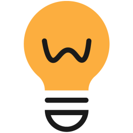
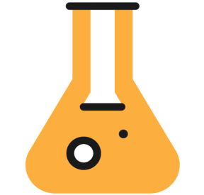

Simulation modelling represents a distinct scientific approach alongside theoretical, observational, and experimental methods.

Propose why phenomena occur
Explore what could be
POPCORN's FocusAnalyze what is

Test what changes when